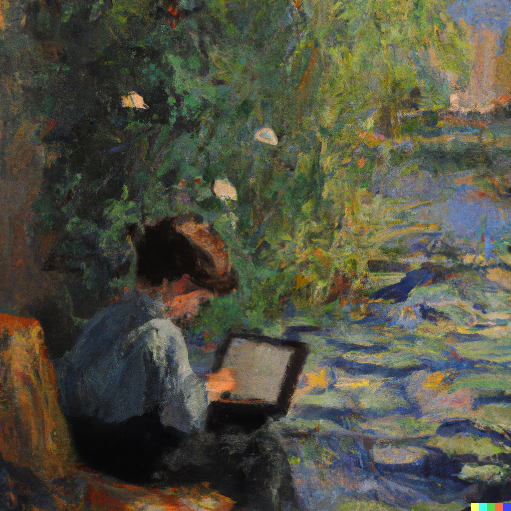
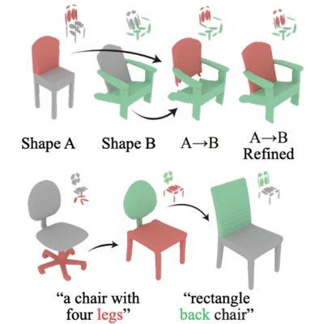
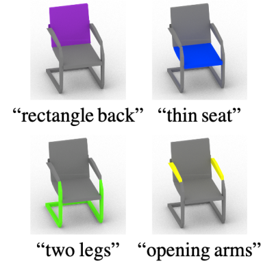

- (Jul. 2023) Our SALAD paper got accepted to ICCV 2023!
- (Feb. 2023) I received an outstanding TA award.
- (Feb. 2023) My Master's thesis has been awarded the outstanding thesis award!
- (Dec. 2022) I passed my Master's thesis defense.
- (Nov. 2022) Our PartGlot paper won the Qualcomm Innovation Fellowship Korea (QIFK) 2022!
- (Oct. 2022) I made a short presentation about PartGlot at the ECCV 2022 Language for 3D Scenes (L3DS) Workshop.
- (Jul. 2022) I won an outstanding paper award at Korea Computer Graphics Society (KCGS 2022).
- (Feb. 2022) I received an outstanding TA award.

Bio
I am Juil Koo (구주일 in Korean), a PhD student at KAIST School of Computing advised by Prof. Minhyuk Sung.
My research interest is vision & language multi-modality, especially the relationship between 3D geometry and language. I am working on the next step in AI, where machines can think more complexly utilizing the information of multiple modalities like humans.

"A painting of a boy using a computer in front of a pond with water lilies, by Claude Monet" generated by DALL·E 2
News
Publications

Juil Koo*, Seungwoo Yoo*, Minh Hieu Nguyen*, Minhyuk Sung (* denotes equal contribution.)
ICCV 2023

Juil Koo, Ian Huang, Panos Achlioptas, Leonidas Guibas, Minhyuk Sung
CVPR 2022 (Oral)